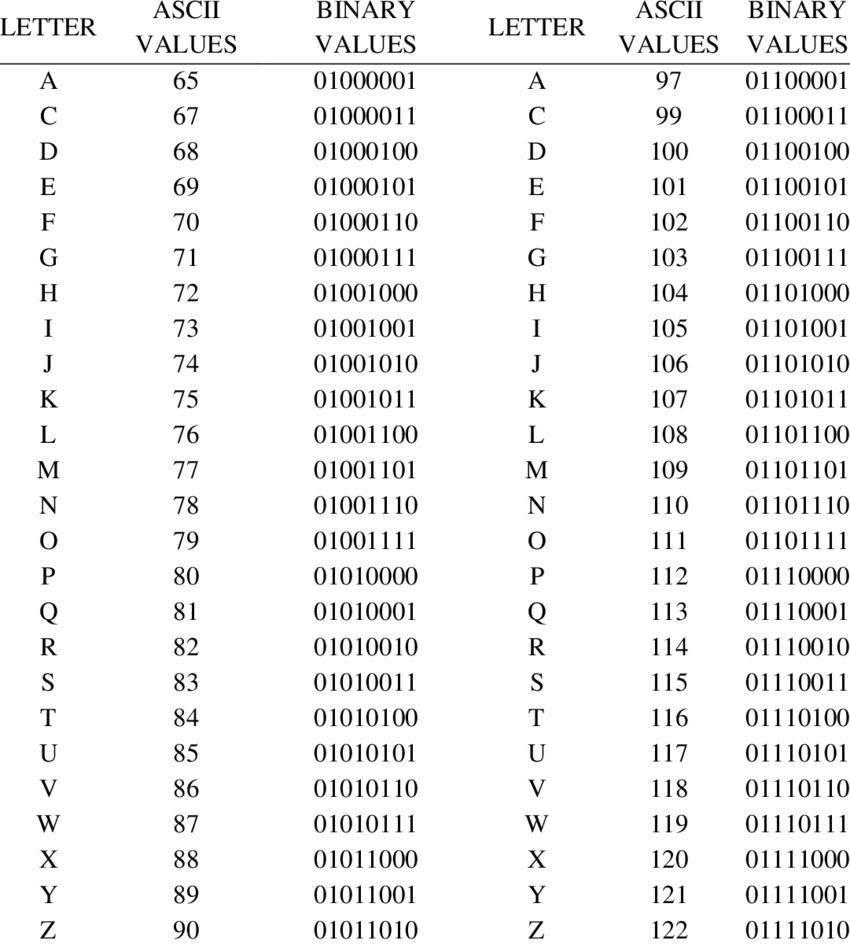
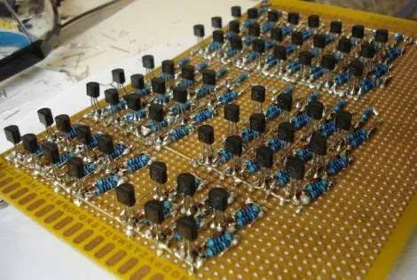
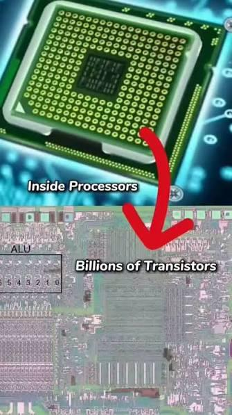
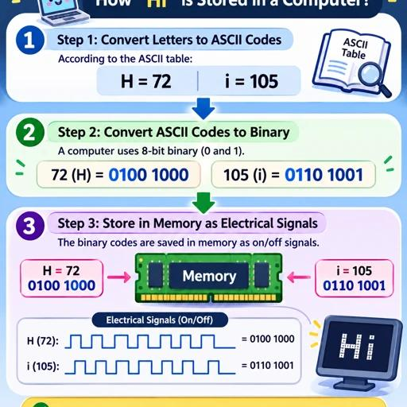
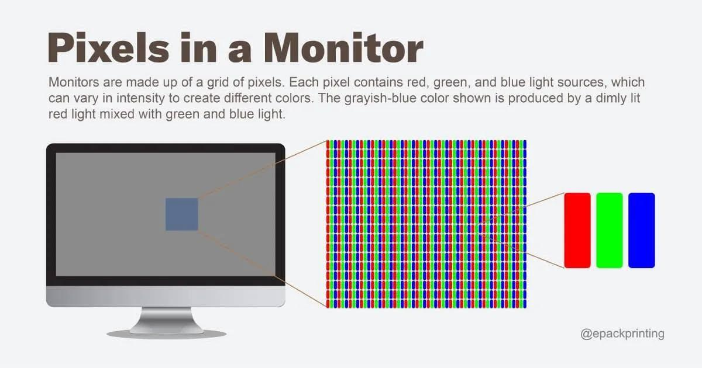
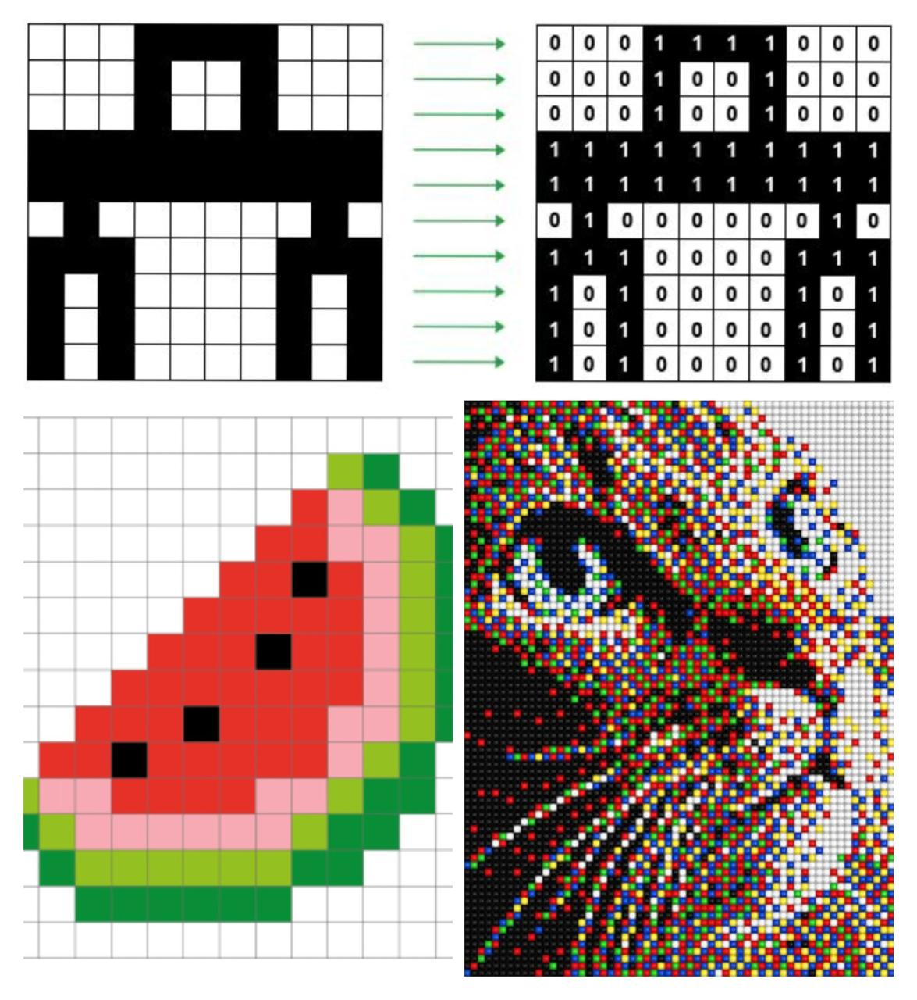
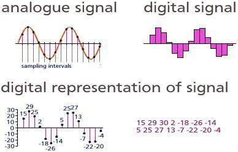
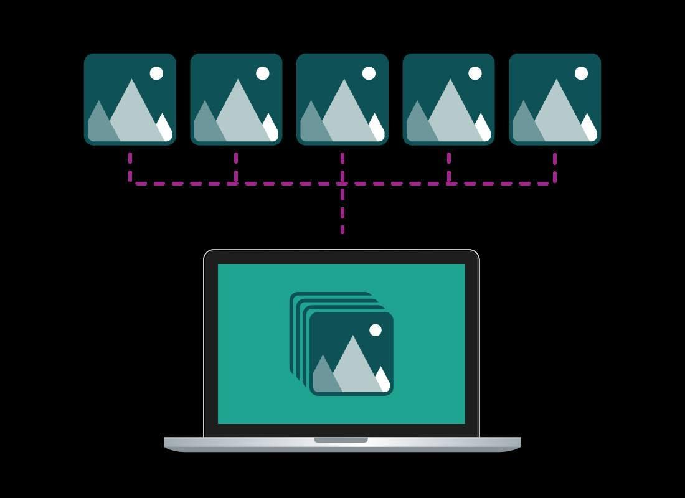

သင်ဒီစာသားကို ဖတ်နေတယ်… ဒီပုံကို ကြည့်နေတယ်… ဒါပေမယ့် ဒီအရာတွေ အားလုံး ဘယ်လို ကွန်ပျူတာ (သို့) ဖုန်းထဲကို သွားရောက်နေသလဲ? 🤔
ကွန်ပျူတာဆိုတာ 0 နဲ့ 1 ကိုသာ နားလည်တယ် ဆိုတာမှန်လား?
ဒါဆိုရင် ကွန်ပျူတာရဲ့ “ဦးနှောက်” က ဘယ်လိုနည်းနဲ့ ဒီလို ရှုပ်ထွေးလွန်းတဲ့ စာသား၊ ရုပ်ပုံ၊ အသံနဲ့ ဗီဒီယိုတွေကို ဘယ်လိုမှတ်ထားနိုင်သလဲ?
"အပိုင်း (၁) ASCII"
စာသား၊ ရုပ်ပုံ၊ အသံနဲ့ ဗီဒီယိုတွေ ကွန်ပျူတာထဲမှာ ဘယ်လိုမှတ်ထားလဲဆိုတာ မလေ့လာခင်မှာ
ASCII ဆိုတဲ့ "American Standard Code for Information Interchange" ကို အရင်ပြောပြပေးချင်ပါတယ်။

ASCII ကို ရှင်းရှင်းလင်းလင်း ရှင်းပြရရင် – ဒါဟာ ကွန်ပျူတာတွေအတွက် စာလုံးတွေရဲ့ စံသတ်မှတ်ချက်ပါ။
ကွန်ပျူတာက "A" ဆိုတဲ့ စာလုံးကို မြင်တဲ့အခါ 65 ဆိုတဲ့ နံပါတ်အဖြစ် သိပါတယ်။
ဒီ 65 ဆိုတဲ့ နံပါတ်ကို ကွန်ပျူတာရဲ့ မှတ်ဉာဏ်ထဲမှာ 01000 0001 ဆိုတဲ့ Binary Code အဖြစ် သိမ်းထားပါတယ်။

Computer ထဲမှာပါတဲ့ Transistor က လျှပ်စစ်ခလုတ် (Electronic Switch) တစ်မျိုးပါ။
ON (ဖွင့်ထားတဲ့အခြေအနေ) = 𝟭
OFF (ပိတ်ထားတဲ့အခြေအနေ) =𝟬
ကွန်ပျူတာက 0 နဲ့ 1 ကိုသာ နားလည်တယ်ဆိုတာ, အရာတွေအားလုံးကို Binary (0နဲ့1) အဖြစ် ပြောင်းလဲဖော်ပြရတာက Transistor ရဲ့ ON/OFF သဘောတရားကြောင့်ပဲ ဖြစ်ပါတယ်။
(Switch က on and off အပြင် တခြား situation ပါရှိသေးရင်တော့ 0,1 အပြင် 2ဘာညာပါ မှတ်နိုင်မှာပေါ့နော် 😅)

💻 အပိုင်း (၂) — ကွန်ပျူတာတွေက စာ(Text)တွေကို ဘယ်လိုသိမ်းလဲ?
အပေါ်မှာ ပြောပြသွားတဲ့ ASCII နဲ့ binary ကိုနားလည်ပြီဆို text တွေကို ကွန်ပျူတာထဲမှာ ဘယ်လိုသိမ်းလဲဆိုတာ မခက်တော့ပါဘူး။
ဥပမာ - "Hi" ဆိုတဲ့ စာသားကို သိမ်းတဲ့ပုံစံကိုကြည့်ကြည့်ကြရအောင်

အဆင့်၁ အနေနဲ့ စာလုံးတွေကို (ASCII)ကုဒ်နံပါတ်ပြောင်းခြင်း။ ASCII ဇယားအရ H = 72, i = 105 လို့ သတ်မှတ်တယ်။(အပေါ်က ASCII table မှာပြန်ကြည့်လို့ရတယ်နော်)
အဆင့်၂ အနေနဲ့ ASCII ကုဒ်နံပါတ်ကို Binary ပြောင်းခြင်း။ ကွန်ပျူတာနားလည်အောင် (0 and 1) binary (8 bit) ပြောင်းတယ်။
72 (H) = 0100 1000
105 (i) = 0110 1001
အဆင့်၃ အနေနဲ့ လျှပ်စစ်အခြမ်းအဖြစ် သိမ်းဆည်းခြင်း။ နောက်ဆုံးမှာ (H=72)01001000,(i=105) 01101001 ဆိုတဲ့ binary ကုဒ်တွေကို memory ထဲမှာ လျှပ်စစ်အခြမ်း (on/off signals) အဖြစ်သိမ်းလိုက်ပါတယ်။ (on=1,off=0)
💻 အပိုင်း (၃) — ကွန်ပျူတာတွေက ရုပ်ပုံတွေကို ဘယ်လိုသိမ်းလဲ?

အခု မြင်နေရတဲ့ ရုပ်ပုံတိုင်းဟာ Pixels လိုခေါ် သေးငယ်တဲ့ အစက်အပြောက်လေးတွေနဲ့ ဖွဲ့စည်းထားတာပါ။ ဖန်သားပြင်ကို အနီးကပ်ကြည့်လိုက်ရင် ဒီအစက်လေးတွေကို မြင်ရမှာပါ။
ဒီတော့ ရုပ်ပုံတစ်ပုံသိမ်းဖို့ဆို pixel တစ်ခုချင်းစီရဲ့ အရောင်ကို သိမ်းရမယ်။
အရောင်တွေကို ဘယ်လိုသိမ်းလဲ?
ကွန်ပျူတာတွေက RGB စနစ် ကိုသုံးပါတယ်။
- R = Red (အနီ)
- G = Green (အစိမ်း)
- B = Blue (အပြာ)
- ၁။ နမူနာယူခြင်း (Sampling)
- ၂။ ဂဏန်းတန်ဖိုးကို Binary အဖြစ် ပြောင်းခြင်း
- ၃။ သိမ်းဆည်းခြင်း
- ၁။ ရုပ်ပုံအပိုင်းကို သိမ်းခြင်း
ဖရိမ် တစ်ခုချင်းစီကို ပုံတစ်ပုံအတိုင်း သိမ်းရပါမယ်။
(ရုပ်ပုံ = pixel တွေရဲ့ RGB အရောင်ကုဒ်တွေကို binary အဖြစ် သိမ်းခြင်း) - ၂။ အသံအပိုင်းကို သိမ်းခြင်း
ဗီဒီယိုမှာပါတဲ့ အသံတွေကိုလည်း အသံဖိုင်အတိုင်း သိမ်းရပါမယ်။
(အသံ = အသံလှိုင်းကနေ နမူနာယူထားတဲ့ ဂဏန်းတန်ဖိုးတွေကို binary အဖြစ် သိမ်းခြင်း) - ၃။ ပေါင်းစပ်ပြီး သိမ်းခြင်း ကွန်ပျူတာက ဒီ ဖရိမ်ပုံတွေ နဲ့ အသံကုဒ်တွေ ကို ဖိုင်တစ်ခုတည်းထဲမှာ စနစ်တကျ ပေါင်းစပ်ပြီး သိမ်းဆည်းလိုက်တာပါပဲ။
အရောင်စုံပေါင်းစည်းမှု (Additive Color Mixing) နဲ့ အရောင်အားလုံးကို ဖန်တီးနိုင်ပါတယ်။...
R,G,B တစ်ခုချင်းစီကို 0 ကနေ 255 ကြားကိန်းဂဏန်းနဲ့ ဖော်ပြတယ်။
ဥပမာ:
အနီအရောင် (Red) = (R=255, G=0, B=0)
အဖြူအရောင် (White) = (R=255, G=255, B=255)
အမဲအရောင် (Black) = (R=0, G=0, B=0)
မီးခိုးရောင် (Grey) = (R=128, G=128, B=128)
ဒါကို Binary (0နဲ့1) အဖြစ် ပြောင်းကြည့်မယ်
ကွန်ပျူတာက 255 ဆိုတဲ့ နံပါတ်ကို နားမလည်ဘူး။ ဒါကို 8-bit binary အဖြစ် ပြောင်းရမယ်။
255 in decimal = 11111111 in binary
0 in decimal = 00000000 in binary
(Red) = (R=255, G=0, B=0) ကို binary နဲ့ ရေးရင် (11111111 00000000 00000000)
(Blue) = (R=0, G=0, B=255) ကို binary နဲ့ ရေးရင် (00000000 00000000 11111111)
ဒီလိုနည်းနဲ့ ပစ်ကယ်လ် တစ်ခုချင်းစီရဲ့ RGB တန်ဖိုးသုံးခုကို binary ကုဒ် (၃ ခု) အဖြစ် သိမ်းပါတယ်။
pixelsတွေ သန်းချီပြီး စုစည်းလိုက်တဲ့အခါ အခု မြင်ရတဲ့ ရုပ်ပုံတွေအဖြစ် ကွန်ပျူတာက ပြပေးတာပါ။
အနှစ်ချုပ်:
ရုပ်ပုံ = pixels အားလုံးရဲ့ RGB အရောင်ကုဒ်တွေကို binary (0နဲ့1) အဖြစ် သိမ်းထားခြင်းပါ။
How Computers Store Images | Pixels, RGB & File Types Explained Simply!

အပေါ်မှာရှင်းပြထားတာ နည်းနည်းရှပ်တယ်ထင်ရင် ဒီပုံကို ကြည့်လေးကိုကြည့်ပြီး တွေးကြည့်နော်
လေးထောင် ကွက်လေးတွေက pixel အကွက်လေးတွေပေါ့
💻 အပိုင်း (၄) ကွန်ပျူတာတွေက အသံကို ဘယ်လိုသိမ်းလဲ?

လက်တွေ့ကမ္ဘာမှာ အသံဆိုတာ လေထဲကတစ်ဆင့် လှိုင်းအဖြစ် ကူးစက်လာတဲ့ တုန်ခါမှုတစ်မျိုးပါ။ ဒီလှိုင်းကို စက်ကိရိယာတွေနဲ့ ဖမ်းယူပြီး ဂရပ်ပေါ်မှာ ဆွဲပြရင် လှိုင်းတွန့်လို မြင်ရမှာပါ။
ကွန်ပျူတာက ဒီလှိုင်းကို samples လို့ခေါ်တဲ့ အစိတ်အပိုင်းလေးတွေ အများကြီး ခွဲပြီး မှတ်တယ် (တစ်စက္ကန့်ကို ထောင်နဲ့ချီ မှတ်ပါတယ်)။
ဆိုတော့ အဆင့် (၃) ဆင့် ရှိပါတယ်:
ကွန်ပျူတာက အသံလှိုင်းကို တစ်စက္ကန့်အတွင်းမှာ ကြိမ်ရပ်အများကြီးနဲ့ နမူနာ ယူပါတယ်။ ဒီနမူနာတစ်ခုချင်းစီဟာ လှိုင်းရဲ့ အမြင့်အနေအထား (Amplitude) ကို ဖော်ပြတဲ့ ဂဏန်းတန်ဖိုးတစ်ခုပါပဲ။
ရလာတဲ့ ဂဏန်းတန်ဖိုး (ဥပမာ - 72, 105, -30) တွေကို ကွန်ပျူတာနားလည်အောင် Binary (0 နဲ့ 1) အဖြစ် ပြောင်းလဲသိမ်းဆည်းပါတယ်။
နောက်ဆုံးမှာ ဒီ binary ကုဒ်တွေအားလုံးကို ဖိုင်တစ်ခုအနေနဲ့ (ဥပမာ - MP3, WAV) သိမ်းလိုက်တာပါပဲ။
ဥပမာ - CD ရဲ့ အသံအရည်အသွေး Sample Rate (နမူနာယူနှုန်း): Sample Rate (44,100 Hz) တစ်စက္ကန့်ကို ၄၄,၁၀၀ ကြိမ်
ဆိုလိုတာက CD တစ်ခုရဲ့ အသံဟာ တစ်စက္ကန့်အတွင်းကို အသံနမူနာပေါင်း ၄၄၁၀၀ ချက်ကို ယူထားတယ်လို့ ပြောတာပါ။
Text သိမ်းသလို 8 bit နဲ့ မသိမ်းဘဲ နမူနာတစ်ခုချင်းစီကို သိမ်းဖို့ 16-bit (သို့မဟုတ် 0နဲ့1 ၁၆လုံး) သုံးပြီး သိမ်းတယ်။
8 bits (2^8) ဆို တန်ဖိုး ၂၅၆ မျိုးသာ ကွဲပြားမယ်။ ဒါဆို အသံက ကြမ်းတမ်းပြီး အရည်အသွေးညံ့မယ်။
16 bits (2^16) ဆို တန်ဖိုး ၆၅,၅၃၆ မျိုး ကွဲပြားမယ်! ဒါဆို အသံက ပိုမို ချောမွေ့ပြီး ပိုကြားကောင်းမယ် (CD Quality)
24 bits ဆို တန်ဖိုး ၁၆.၇ သန်း ကျော်ကွဲပြားပြီး Studio Quality အဆင့်အထိရှိပါမယ်။
ဒီလိုများပြားတဲ့ နမူနာတွေကို သိမ်းရတာကြောင့်ပဲ အသံဖိုင်တွေက သိပ်ကြီးတတ်တာပါ!
အနှစ်ချုပ်:
အသံ = အသံလှိုင်းကနေ နမူနာယူထားတဲ့ ဂဏန်းတန်ဖိုးများအား binary (0နဲ့1) အဖြစ် သိမ်းထားခြင်း

(ဒီပုံက ဘယ်ဘက်က Analog Signal - လက်တွေ့ကမ္ဘာက ချောမွေ့နေတဲ့ အသံလှိုင်း။ ညာဘက်က Digital Signal - ကွန်ပျူတာက နမူနာယူပြီး ဂဏန်းတွေအဖြစ် ပြောင်းထားတဲ့ပုံစံ။ မျဉ်းကွေးချောချောကနေ အဆင့်ဆင့်ရှိတဲ့ မျဉ်းကျားတွေ အဖြစ် ပြောင်းသွားတာကို မြင်ရမယ်။ အောက်ခြေက Digital Representation - ကွန်ပျူတာ လက်တွေ့ မှတ်ထားတဲ့ ကိန်းဂဏန်းတွေရဲ့ ဥပမာစာရင်း။)
Reference ပါ:Here are some good YouTube videos that explain how audio/sound is stored by computers — sampling, bit depth, etc.
💻 အပိုင်း (၅) —ကွန်ပျူတာတွေက ဗီဒီယိုကို ဘယ်လိုသိမ်းလဲ?
ဗီဒီယိုဆိုတာ လှည့်စားမှုတစ်ခုပါပဲ! 😄

ဗီဒီယိုတစ်ခုဟာ ဖရိမ် (Frames) ခေါ်တဲ့ ရုပ်ပုံတွေ အများကြီးကို အလျင်အမြန် ဆက်တိုက်ပြထားတာသာ ဖြစ်ပါတယ်။ ဥပမာ - တစ်စက္ကန့်ကို ရုပ်ပုံ ၂၄ ပုံ (သို့မဟုတ်) ၃၀ ပုံ စသဖြင့်ပေါ့။
ဒီဖရိမ်တစ်ခုချင်းစီဟာ ရုပ်ပုံတစ်ပုံအတိုင်းပါပဲ။ ဒါ့အပြင် နားကြားနေရတဲ့ အသံတွေလည်း ပါဝင်ပါတယ်။
ဒီတော့ ဗီဒီယိုတစ်ခုသိမ်းဖို့ဆို...
ဒီဖိုင်ကို ဖွင့်ပြလိုက်တဲ့အခါ...
ကွန်ပျူတာက သိမ်းထားတဲ့ ဖရိမ်ပုံတွေကို အစဥ်လိုက် အလျင်အမြန်ပြန်ပြီး၊ သိမ်းထားတဲ့ အသံကိုလည်း တစ်ချိန်တည်း ဖွင့်ပေးလိုက်တဲ့အတွက် ကြည့်ရတဲ့အခါ ရွေ့လျားနေတဲ့ ရုပ်ရှင်ဇာတ်ကား အဖြစ် မြင်ရတာပါ။
အနှစ်ချုပ်:
အနှစ်ချုပ်: ...💻 ကွန်ပျူတာတွေက Text / Image / Sound / Video တွေကို ဘယ်လိုသိမ်းဆည်းလဲ?
🔹 Text – ASCII / Unicode ကို အသုံးပြုပြီး စာလုံးတွေကို ဂဏန်းတန်ဖိုးတွေအဖြစ် သိမ်းတယ်။
🔹 Image – Pixel လို့ခေါ်တဲ့ အစက်လေးတွေအများကြီးနဲ့ ဖွဲ့စည်းထားပြီး Pixel တစ်ခုချင်းစီရဲ့ အရောင်တန်ဖိုးကို သိမ်းတယ်။
🔹 Sound – အသံလှိုင်းကို Samples လေးတွေအဖြစ် နမူနာယူပြီး ဂဏန်းတန်ဖိုးတွေအဖြစ် သိမ်းတယ်။
🔹 Video – ပုံရိပ်တစ်ခုချင်းစီဖြစ်တဲ့ Frames တွေနဲ့ အသံတွေကို ပေါင်းစပ်ပြီး သိမ်းဆည်းတယ်။
✨ Text, Image, Sound, Video ဘယ်အမျိုးအစားပဲဖြစ်ဖြစ်
နောက်ဆုံးမှာ ကွန်ပျူတာက နားလည်နိုင်တဲ့ Binary (0 နဲ့ 1) ပုံစံအဖြစ် ပြောင်းလဲပြီး သိမ်းဆည်းထားတာပါပဲ။
ဒါဟာ Digital World ရဲ့ အခြေခံအကျဆုံး Concept တွေထဲက တစ်ခုဖြစ်ပါတယ်။